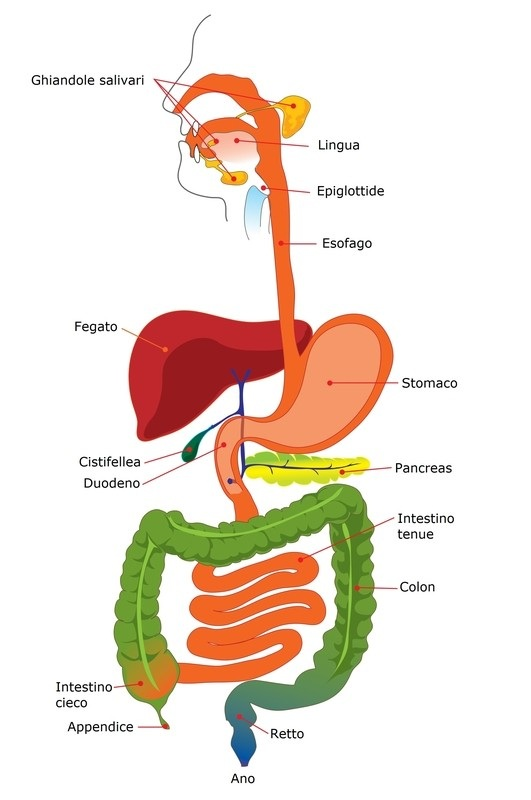

APPARATO DIGERENTE
L'apparato digerente di ogni essere vivente ha il compito di introdurre, di digerire ed assorbire i principi nutritivi contenuti negli alimenti, eliminando i residui non utilizzabili per il metabolismo, sotto forma di feci.
È detto apparato in quanto è un raggruppamento di organi che collaborano ad uno scopo comune, ma diversi sia per funzione che per struttura e per origine embriologica. L'espressione si riferisce ad organismi pluricellulari, e in quanto in grado di assimilare è riferito a eterotrofi, pur utilizzando il concetto della digestione per organismi autotrofi, come per esempio le piante carnivore, e i loro corrispondenti organi digestivi. In genere è principalmente un organo animale.
